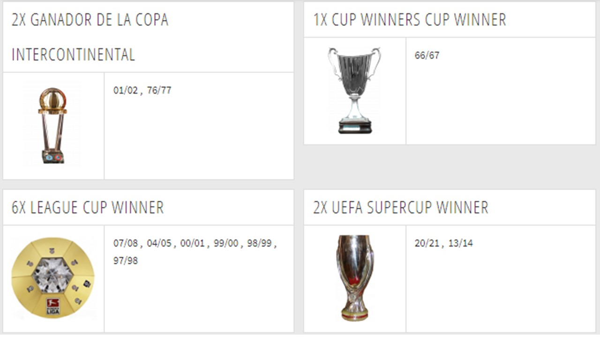

El cuadro muniqués suma otra Bundesliga a su sala de trofeos sin tener que vestirse de corto para repetir como campeón.
El Bayern Múnich no para de ganar. El vigente campeón de la Champions League y del Mundialito de Clubes, añadió a su palmarés la Bundesliga de la temporada 20/21. Y lo ha hecho una hora antes de que se enfrentara al Borussia Mönchengladbach en el Allianz Arena. Le ha bastado con que su mayor rival de los últimos años, el Borussia Dortmund, haya ganado por 3-2 al Leipzig, perseguidor en la tabla de los de Baviera. A aquel clásico rival le ganó la Supercopa también, al inicio de la 21/22. El gigante de Baviera cuenta con 31 títulos en el torneo doméstico, nueve de ellos de forma consecutiva en la última década (2013, 2014, 2015, 2016, 2017, 2018, 2019, 2020 y 2021). También ganó en 2010, pero durante dos años, el Borussia Dortmund rompió la hegemonía del cuadro de Munich. Desde que ganara su primer título en 1932 en una de las competiciones más antiguas del mundo del fútbol, el Bayern se ha mostrado intratable. Con jugadores como Maier, Beckenbauer o Müller, su apogeo en Alemania comenzó a finales de los años 60, conquistando su primer entorchado desde 1932 en 1969. A pesar de que en dos ocasiones, la Bundesliga no tuvo campeón (en 1905 y en 1945, en este último año se finalizó la Segunda Guerra Mundial), el Bayern es muy superior en la clasificación de títulos. El FC Nuremberg es el segundo en la tabla, aunque solo cuenta con 9 títulos. Sin embargo, desde que arrancó la Bundesliga como tal, los máximos perseguidores son el Borussia Dortmund y el Borussia Mönchesgladbach, con cinco entorchados cada uno. La Bundesliga, tal y como se conoce, comenzó en 1962 en Dortmund, aunque el extinto campeonato alemán tiene el mismo valor, por eso el campeonato de 1932 del cuadro muniqués equivale a los 29 que ha conseguido con el actual formato.
